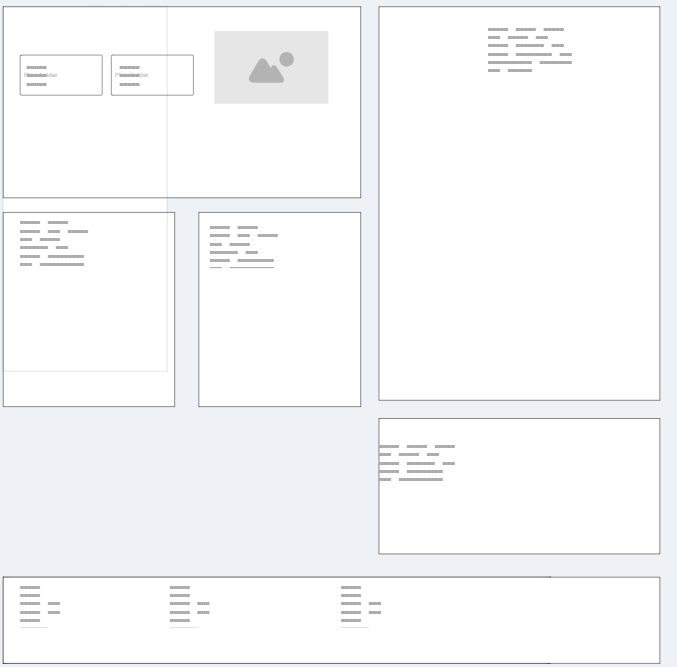
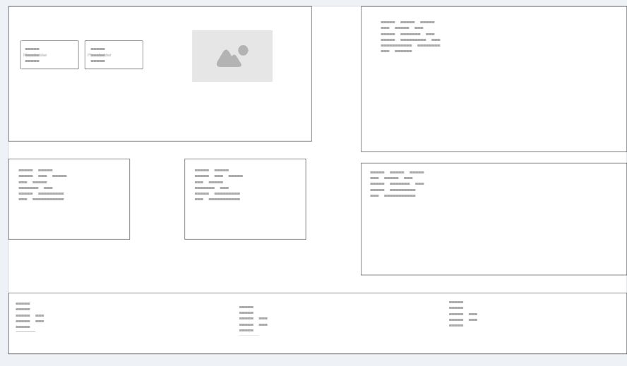

Site Name
Name: Solar Charge Africa
Reason for Name: The name clearly describes the core mission: powering clean electric mobility across Sub-Saharan Africa using off-grid solar infrastructure and rapid battery swapping.
Site Purpose
The purpose of this site is to educate commercial transport operators, fleet managers, and EV stakeholders on off-grid solar charging and rapid battery-swapping solutions across Sub-Saharan Africa. It provides interactive tools such as fuel savings calculators, fleet inquiry forms, and a charging hub directory to accelerate the clean energy transition.
Scenarios
- Scenario 1: "How much money can I save daily on operational costs if I switch my commercial tricycle fleet from petrol to solar battery swapping?"
- Scenario 2: "Where can I locate the nearest operational off-grid solar charging and swap hub along my daily driving route?"
- Scenario 3: "How can I submit an inquiry to partner or onboard my commercial vehicle fleet into the battery-swapping network?"
Color Scheme Palette
-
Primary Color (
#d3d2d6): Used for primary action buttons, active navigation links, and call-to-action highlights. -
Secondary Color (
#141e3f): Used for header backgrounds, primary borders, and sustainability badges. -
Accent Color (
#3B82F6): Used for secondary links, interactive focus states, and data visualization elements. -
Dark Background (
#1F2937): Used for body text on light surfaces and footer backgrounds. -
Light Background (
#F3F4F6): Used for section card container backgrounds.
Typography
The following font families are selected and used across the document and website:
- Heading Font ('Segoe UI', Tahoma, Geneva, sans-serif): Applied to all major headings (
h1,h2,h3) for a clean, modern tech feel. - Body Font (Verdana, sans-serif): Applied to main paragraph text, lists, and forms for maximum readability across screens.
Wireframes
Layout sketches for the home page layout across mobile and desktop devices:
Mobile Layout

Desktop Layout
